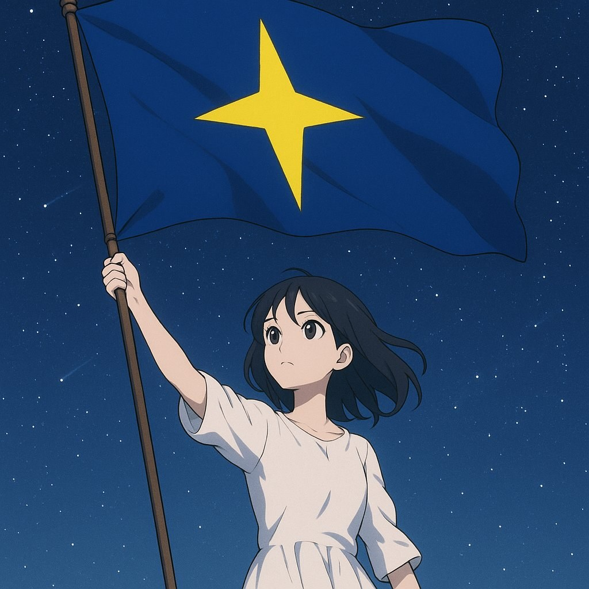

再起群星
假 如 你 是 总 统
一款关于选择与代价的微国家编年史游戏
36 个抉择 · 17 个结局 · 没有回头路
免费游玩 · 一局约 15–20 分钟 · 手机浏览器直接打开，进度自动保存
第二部 · 真之邦：风雨里的家园

2024 年 3 月 3 日 – 2026 年。五次战争之后，这个国家要回答一个问题：它到底是真的，还是虚拟的？
42 个事件 · 19 个结局 · 人物图鉴 41 人全公开。这一部的失败率很高——有些选择一步错，就是连锁崩盘。哪些选择是当年那个人真正选的，不会提前告诉你：走完这一世，结局页自会揭晓。
开始第二部免费游玩 · 建议先玩第一部 · 手机浏览器直接打开，进度自动保存
这是什么
星空合众国是一个真实存在了九年的线上共同体。这款游戏改编自它 2023 年 2 月到 2024 年 6 月的真实历史：建制、政变、建设、五次「前新战争」，直到战后新纪元。
你将扮演这个国家的领袖「雪仙」本人，站在每一个历史关口重新做一次选择。标着「史实」的选项，是当年真实发生过的决定——但史实不等于正确，它有时是最痛的那条路。
新手提示（先看这个）
- 没有回头路。选了就是选了，没有撤销键——现实中的总统也一样。但现实只有一条历史，游戏给了你 17 个结局，打完可以再来一局，走另一条路。
- 盯住六个数值：民心、国库、安全、外交，还有一对互相拉扯的——前辈满意度与新移民融合度。顾得了一边，另一边就会掉。
- 事件会先扣数值，你的回应决定能不能把损失挣回来；有些选项要国库够厚才点得动。
- 不认识这些人？游戏里有「人物图鉴」，每个人是谁、盖过什么、打过什么仗，都写在里面；开局先翻一遍，代入感完全不同。
- 想看真实的东西：游戏里还有「联邦实物档案」——真实的地图、护照、明信片和菲尔南德画的首都全图，都在里面。
关于这个国家
星空合众国（Starry Sky Federation），2018 年成立。自由、开放、包容、团结。它的故事被写成了小说《星空礼品店》，连载于 Pixiv；这个游戏，是那段历史的另一种讲法。
离开过也没关系，星星会等你。
支持作者
本游戏免费游玩。如果你真心喜欢这个故事，或者想支持作者，欢迎赞赏。